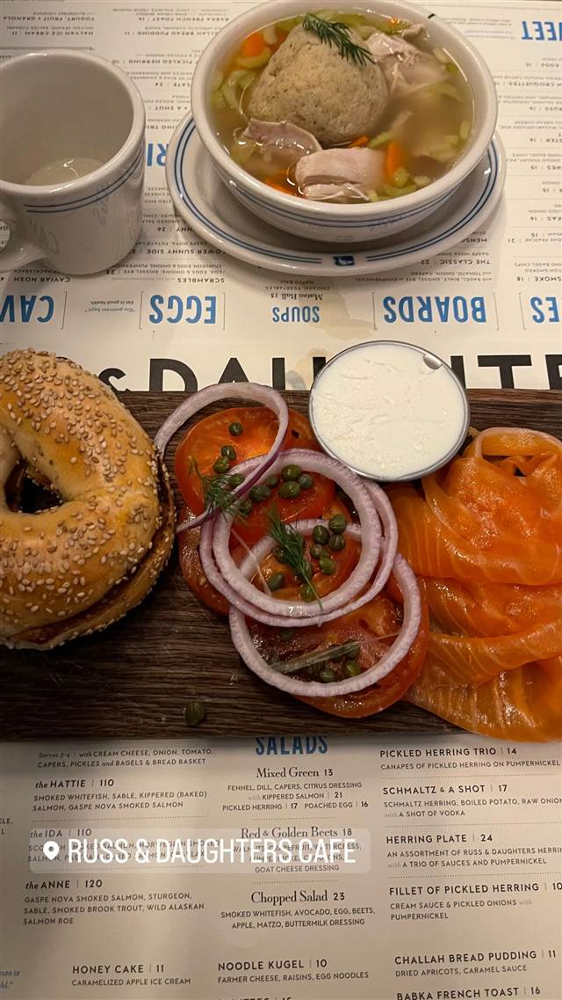
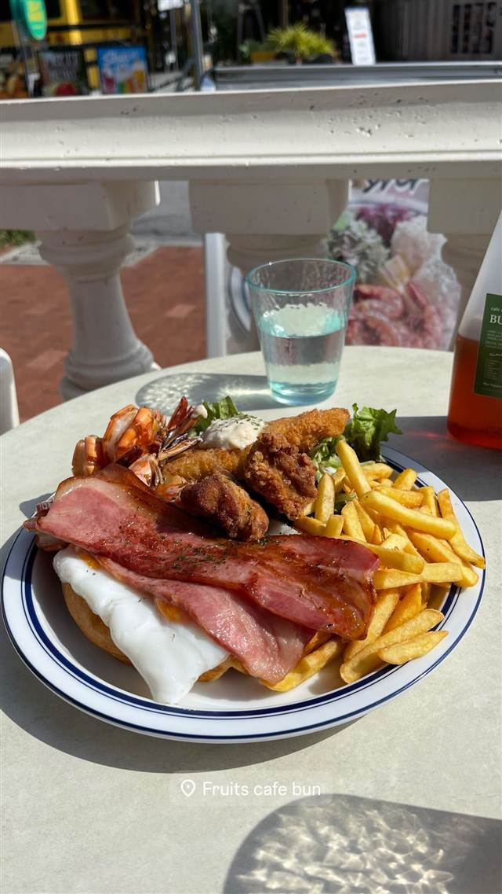
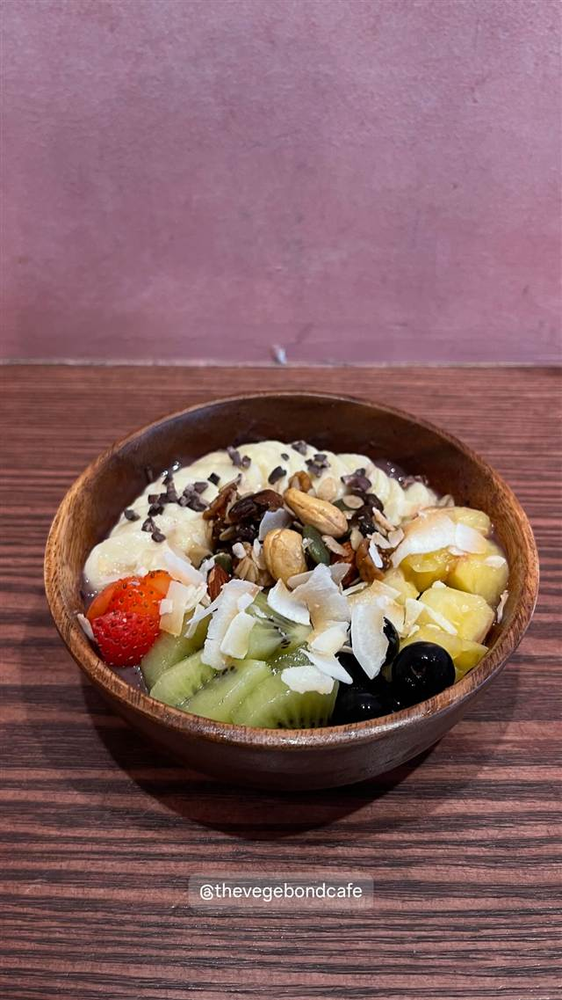

カフェ · カフェ · ロウアーイーストサイド
Russ & Daughters Cafe
創業100年、初めて座って食べられるようになったベーグルとサーモン
RUSS & DAUGHTERS CAFE
1914年、ポーランド移民のジョエル・ラスがオーチャード・ストリートで行商から始めた惣菜店「ラス・アンド・ドーターズ」が源流。2014年、創業100周年を記念して4代目のニキ・ラス・フェダーマンとジョシュ・ラス・タッパーが同じ通りに座って食事できるカフェをオープンした。
TRIVIA
へえ、という話
- 開業から100年間、客は店頭で買うだけだった。座って食事ができるこのカフェは創業100周年の2014年に初めて誕生した
- カフェのあるオーチャード・ストリートは、創業者ジョエル・ラスが行商をしていた通りでもある
REVIEWS
みんなの声
「スモークサーモンの上質さと価格の高さ」に注目
- 薄く上質に仕込まれたスモークサーモンの味を高く評価する声が多い
- 週末のブランチタイムは45分ほど列に並んで待つこともあるという声がある
- スモークサーモンの盛り合わせは20ドルを超え、価格の高さを指摘する声もある
Yelp 口コミ1278件
| 創業 | 2014年開業（本家Russ & Daughtersは1914年創業） |
|---|---|
| 系譜 | 創業者ジョエル・ラスの4代目、ニキ・ラス・フェダーマンとジョシュ・ラス・タッパーが、創業100周年を機に本店近くのオーチャード・ストリートに座って食事ができるカフェ業態として開いた |
| 看板 | サーモン（ロックス）を挟んだベーグル、ユダヤ系惣菜「アペタイジング」各種 |
| 予算 | 昼 $20～$40 夜 $20～$40 |
| 場所 | Delancey St 127 Orchard St, New York, NY 10002 |
| 注意 | 常に行列ができる人気店。本家の惣菜店は徒歩数分のE. Houston St.にある |
食べたもの：ベーグルとサーモン
NEARBY
近い店・同じ系統の店
-
 カフェ 白金台
Cafe La Boheme 白金（カフェ ラ・ボエム 白金）
明太子パスタを最初に出した、お城のような一軒家イタリアン
昼 ¥1,000～¥1,999 夜 ¥3,000～¥3,999
カフェ 白金台
Cafe La Boheme 白金（カフェ ラ・ボエム 白金）
明太子パスタを最初に出した、お城のような一軒家イタリアン
昼 ¥1,000～¥1,999 夜 ¥3,000～¥3,999
- 写真なし カフェ 北大路駅 大仙院 床の間と玄関が日本最古の国宝、千利休が秀吉に茶を献じた書院
-
 カフェ 表参道駅
i2 cafe (アイツーカフェ)
フルーツサンド店の姉妹店が出す、オーブン焼きのダッチベイビー
昼 ¥2,000～¥2,999 夜 ¥2,000～¥2,999
カフェ 表参道駅
i2 cafe (アイツーカフェ)
フルーツサンド店の姉妹店が出す、オーブン焼きのダッチベイビー
昼 ¥2,000～¥2,999 夜 ¥2,000～¥2,999
-

カフェ 北谷 cafe and fruits BUNBUN 沖縄の珍しい果物を使うワッフルやパフェ、余りは冷凍しフードロス削減 昼 ¥1,000～¥1,999 夜 ¥1,000～¥1,999 -

カフェ 白金高輪駅 THE VEGEBOND CAFE 群馬・高崎の農園の野菜を加熱せず搾るジュース・スムージー専門店 昼 ～¥999 夜 ¥1,000～¥1,999 -
 カフェ 三軒茶屋
cafe The SUN LIVES HERE
牛乳瓶入り3層チーズケーキ「CHILK」は世田谷区公式土産に認定
昼 ～¥999 夜 ～¥999
カフェ 三軒茶屋
cafe The SUN LIVES HERE
牛乳瓶入り3層チーズケーキ「CHILK」は世田谷区公式土産に認定
昼 ～¥999 夜 ～¥999